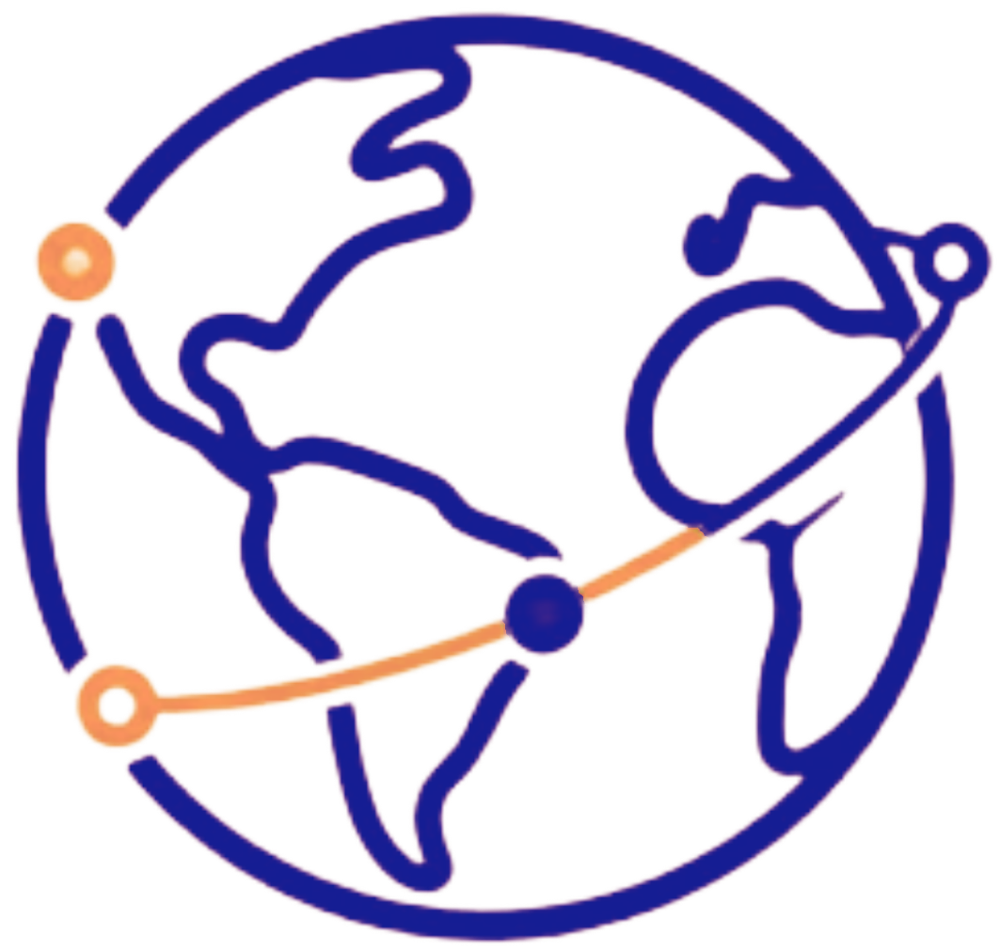

Conectando pessoas,
ONGs e empresas para
um impacto maior.
Encontre causas sociais e ambientais perto de você ou de forma remota,
participe de ações voluntárias e receba um certificado que pode ser
aproveitado como horas de atividades complementares.

Por que a ConexãoDoBem existe?
Muita gente quer ajudar, mas não sabe por onde começar.
E há muitas ONGs que dependem de trabalho voluntário para funcionar.
Por isso estamos aqui, para ajudar quem quer ajudar.
65%
dos brasileiros não fazem trabalho
voluntário atualmente
12%
apontam não saber por onde
começar ou não conhecer
projetos que precisam de apoio
2,5%
é a taxa de voluntariado entre
jovens de 14 a 24 anos, a menor
entre todas a idades